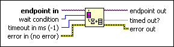

Flush Stream Function
Owning Palette: Network Streams Functions
Requires: Base Development System (Windows)
Transfers all data to the reader endpoint before data flow resumes. You can call this function from the writer endpoint only. Use this function before using the Destroy Endpoint function to ensure that the writer endpoint buffer is empty before you destroy it.

 Add to the block diagram Add to the block diagram |
 Find on the palette Find on the palette |